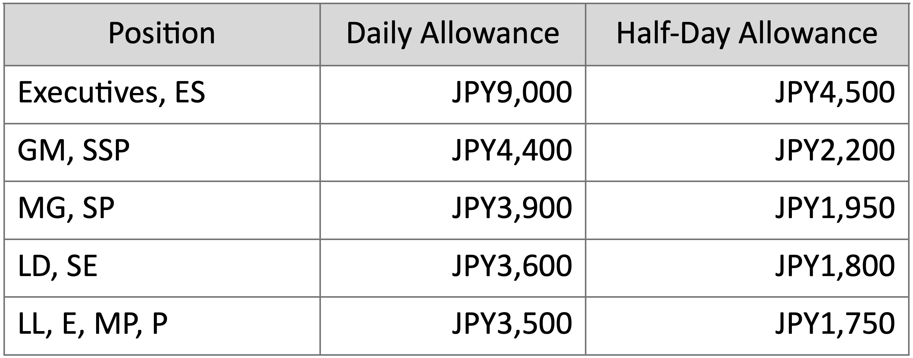
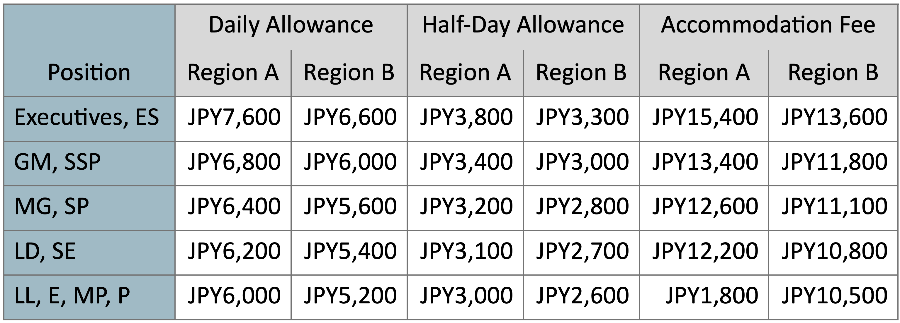

Treatment of Business Travel
Business travel starts from when an employee leaves the company or from his/ her home to the destination and ends when he/she returns to the company or his/her home.
An employee should directly return to his/her home when it is not possible to go back to the company from business travel within business hours.
An employee must report business travel to the supervisor immediately after a day trip or within 3 days after the overnight trip.
Classes of service shall determined according to the employees position:
Working hours is counted based on the actual work during business travel.
Domestic Travel:
Basically, traveling by personal cars is not allowed.
Travel by an express trains and Shinkansen are allowed when the travel distance is beyond 50km, unless emergency cases and the supervisor approves it in advance.
Travel by taxi is only allowed when it is needed for business or for hospitality reason.
In case an employee stays in the same place for more than 7 days, the company may reduce maximum 30% from accommodation fees and daily allowance.
For a day trip, travel out of business hours between the following locations shall be treated as overtime or holiday work.
1) the company and the destination
2) the destination to another destination
The travel time from employee’s home and the destination out of business hours is not treated as overtime nor holiday work.
No Daily Allowances payment when traveling between the neighbor offices:
1) Head Office, Atsugi Works and Fuji-Katsuyama Works
2) Head Office, Atsugi Works, Omiya and Higashi-Tokyo Sales Branches
3) Fuji-Katsuyama Works and Suwa Sales Branches
4) Osaka, Kyoto and Hyogo Sales Branches
5) Omiya and Ota Sales Branches
6) Shizuoka and Hamamatsu Sales Branches
7) Hamamatsu and Nagoya Sales Branches
In the event that the business hours of destination offices differ from the business hours of your original workplace, an employee should observe the rules accordingly.
International Travel:
Entertainment expenses are only reimbursed when an employee gets supervisor’s approval before or immediately after the event.
The company shall provide overseas medical insurance for business travel.
Allowances for Domestic Travel
Day Trip Daily Allowance
Overnight Trip Daily Allowance

Half day allowance shall be applied for the business travel finished before noon or starts from the afternoon.
No payment for Daily allowance in case an employee works in a company all day. But if working in sales branches, JPY2,200 of allowance shall be paid.
Accommodation Fee
JPY1,500 of accommodation fee is paid to an employee stays in the company dormitory.
Holiday Travel Allowance
Special Travel Allowance
The above allowance is applied to the positions lower than LD, SE and not paid together with other allowances.
Additional Allowance
Allowances for International Travel
Daily/Half-Day Allowances & Accommodation Fees

Region A: Europe, America, Australia, New Zeeland, Africa, Middle East, Russia
Region B: China, Korea and other regions not mentioned as Region A
For the travel to New York, Chicago and Los Angeles, daily and half-day allowance is increased to 115%.
Holiday Travel Allowances
Additional Allowance
Reimbursement of Travel Cost
When applying for a reimbursement, an employee shall claim the travel expenses with approval from the supervisor by the due date ruled in the policy:
Domestic Travel： 3 days after the travel
International Travel： 2 weeks after the travel
Expense Report System： SAP Concur
For transportation expenses Claims/reimbursements, an employee must submit receipts except for trains and public buses.
In the case the cost is in foreign currency, the exchange rate should be the amount written on the credit card statement or foreign currency exchange receipt, otherwise it must be the one specified by the company.